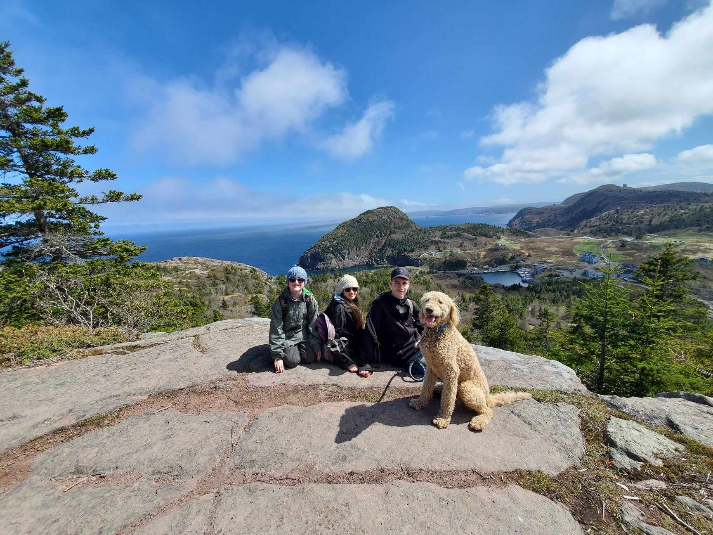
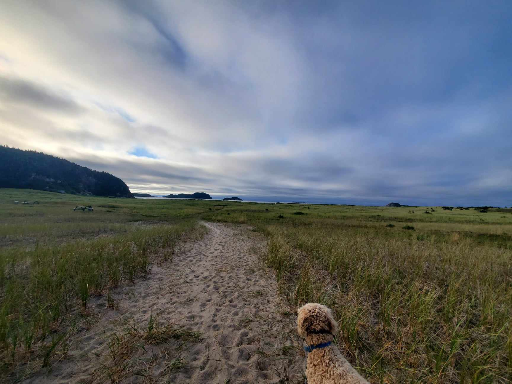
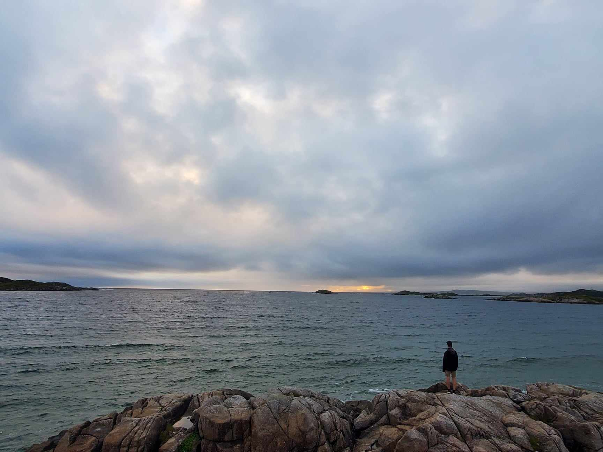

Exploring the East Coast Trail in St. John's, Newfoundland:
A Journey into the Unknown
Join Wilfred, your favorite furry guide, as he embarks on an epic walking adventure along the East Coast Trail near St. John's, Newfoundland. Nestled on North America's easternmost coastline, this 336-kilometer trail system promises breathtaking views, rugged cliffs, lush forests, and the soothing embrace of the Atlantic breeze.
🌲 Trail Highlights: Marvel at the diverse landscapes of the East Coast Trail – from the towering cliffs offering panoramic coastal views to the serene beauty of pristine forests. Wilfred explores every nook and cranny, uncovering the secrets of this doggy paradise.
🐶 Dog's-Eye View: Experience the journey through Wilfred's eyes as he sniffs out the intriguing scents and encounters the local flora and fauna. This is more than a walk; it's a canine exploration of nature's wonders.
📍 Geographical Wonders: Discover the unique charm of St. John's, NL, perched at the edge of North America's eastern coastline. Each step Wilfred takes brings him closer to the continent's edge, offering a perspective that is both awe-inspiring and tail-waggingly exciting.
Exploring Burgeo, Newfoundland
Burgeo is located in Southwestern Newfoundland, approximately 3 hours from Corner Brook. Hiking in Burgeo, Newfoundland is an enchanting experience that immerses outdoor enthusiasts in the rugged beauty of Atlantic Canada.
The trails in and around Burgeo offer a captivating blend of coastal charm and wilderness. As you embark on your hike, you'll find yourself surrounded by breathtaking landscapes. The coastal trails reveal stunning vistas of the ocean, where the rhythmic waves create a mesmerizing symphony of nature.


The hiking routes in Burgeo cater to various skill levels, providing both casual strollers along wooden boardwalks and avid trekkers with opportunities to explore the region's unique geology and vibrant ecosystems.
Whether you're drawn to the panoramic views, the tranquility of the coastal ambiance, or the chance to spot local wildlife, hiking in Burgeo promises an unforgettable adventure that showcases the untamed allure of Newfoundland's great outdoors.
